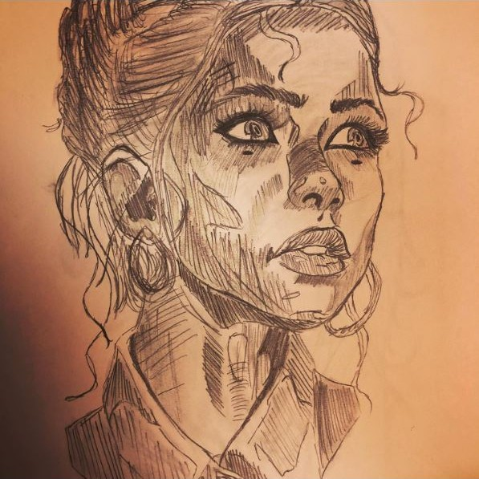
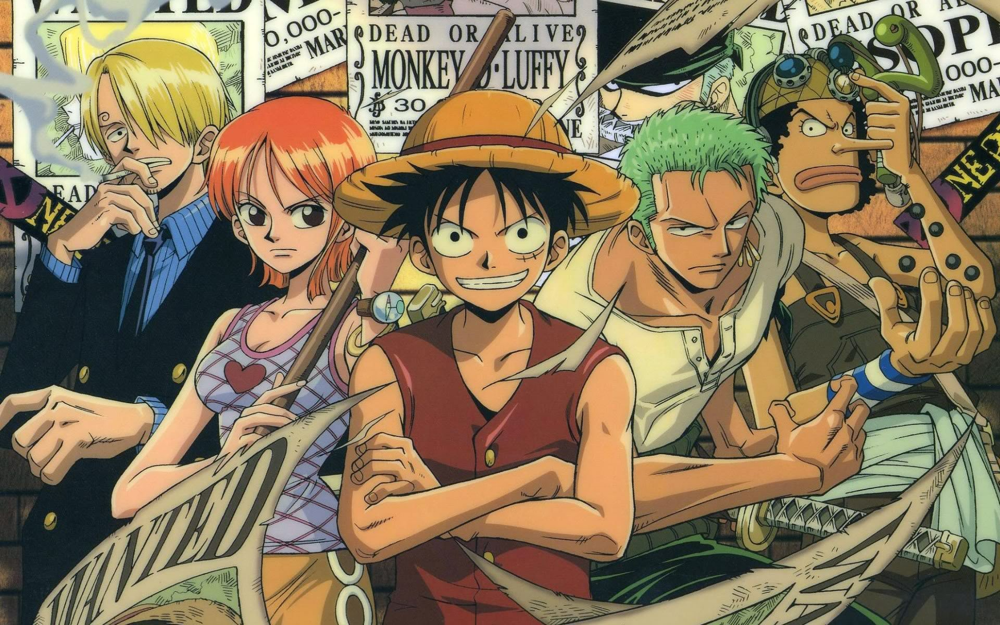

|
|
|
 |
 |  |
My name is Allen Ly; I am currently pursuing the Electrical Engineering degree offered by the College of Engineering, and a Spanish degree offered by the College of Arts and Sciences. I also have a mathematics minor. I'm currently entering my senior year, so I hope to be done soon, and hope to enter the industry after finishing my studies. Ideally, I will work somewhere in power systems design, though I do have to take an exam to get a license if I wanted to enter that field of work, so I'm not quite sure about it just yet. On my free time, I try to do things that I like provided I don't have to do any adulting. I draw sometimes, and I also am watching this cartoon series called "One Piece". Above, I provided an image of the cartoon and one of my drawings. This website was created in order to satisfy a requirement for one of my classes. Although it's not a part of my major, I thought it was a good opportunity to take a class and expand my knowledge.
*Small Note*
I decided to fit the background to the page because I didn't really like the look when it was sized to 800 x 600 and had the white outter borders around it, if that's fine